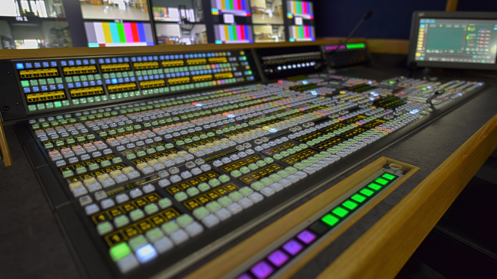
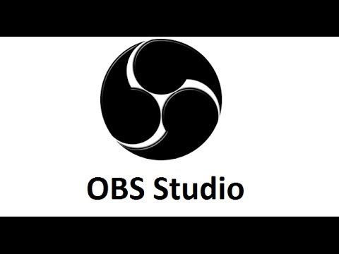

The Web
Deel 1
Multimedia
Profiel Content Creator
tooling Video en Streaming Media productie
 Bij productie van TV, film, live streaming en dergelijke wordt van oudsher apparatuur gebruikt om verschillende bronnen op aan te sluiten, en de productieleiding kanaliseert deze naar wat wordt opgenomen of uitgezonden. Een vision mixer is een apparaat dat wordt gebruikt om te kiezen tussen verschillende videobronnen en, in sommige gevallen, videobronnen samen te stellen om speciale effecten te creëren.
→ zie: Wikipedia Vision Mixer
Naast hard cuts (direct schakelen tussen twee ingangssignalen), kunnen mixers ook een verscheidenheid aan overgangen genereren, van eenvoudig oplossing tot patroondoekjes. Bovendien kunnen de meeste vision mixers keying bewerkingen uitvoeren en kleursignalen genereren (in deze context mat genoemd). De meeste vision mixers zijn gericht op de professionele markt, met nieuwere analoge modellen met componentvideo aansluitingen en digitale met seriële digitale interface (SDI). Ze worden gebruikt in live televisie, zoals externe uitzendingen, met videobandopname (VTR) en videoservers voor lineaire videobewerking, hoewel het gebruik van vision-mixers in videobewerking grotendeels is vervangen door computergebaseerde niet lineaire bewerkingssystemen ( NLE).
Video en Streaming Media productie kenmerken
Omdat vision mixers verschillende videosignalen combineren, zoals VTR's en professionele videocamera's, is het belangrijk dat al deze bronnen goed op elkaar zijn afgestemd. In professionele analoge faciliteiten is alle apparatuur "genlocked" met zwart en burst of tri-level sync van een videosignaalgenerator. De signalen die niet kunnen worden gesynchroniseerd, hetzij omdat ze afkomstig zijn van buiten de faciliteit of omdat de specifieke apparatuur geen externe synchronisatie accepteert, moeten door een framesynchronisatie gaan.
Sommige vision mixers hebben interne "framesynchronisaties" of kunnen afzonderlijke apparatuur zijn, zoals een "tijdbasiscorrector". Als de mixer wordt gebruikt voor videobewerking, moet de bewerkingsconsole die meestal de vision mixer op afstand bestuurt, ook worden gesynchroniseerd. De meeste grotere vision mixers scheiden het bedieningspaneel van de daadwerkelijke hardware die de mixerfuncties uitvoert vanwege overwegingen met betrekking tot ruis, temperatuur en kabellengte. Bij dergelijke mixers bevindt het bedieningspaneel zich in de productiecontrolekamer, terwijl de hoofdunit, waarop alle kabels zijn aangesloten, zich vaak in een machinekamer bevindt naast de andere hardware.
- Tooling voor Video en Streaming Media productie
-
Alternatieve niét FOSS tooling Avtake CutFour (SD/HD geschikt voor Windows, CamCamX geschikt voor macOS, D3DGear Broadcaster geschikt voor Windows, ManyCam geschikt voor macOS en Windows, mimoLive geschikt voor macOS, VidBlaster geschikt voor Windows, vMix geschikt voor Windows, Wirecast geschikt voor macOS en Windows, XSplit Broadcaster geschikt voor Windows. Free maar niet FOSS zijn CamTwist geschikt voor macOS, FFsplit geschikt voor Windows, Wirecast for YouTube geschikt voor Windows en macOS.
Wél FOSS tooling Snowmix geschikt voor Linux, macOS en FreeBSD, DVSwitch geschikt voor Linux, FreeJ geschikt voor Linux en macOS, ScreenStudio geschikt voor Linux en gedeeltelijk macOS, WebcamStudio geschikt voor Linux, Live Broadcaster Software geschikt voor Windows en macOS, Open Broadcaster Software (OBS) geschikt voor Linux, Windows en macOS, CasparCG geschikt voor Windows, Voctomix geschikt voor Linux.
- OBS Studio
-
 OBS is free open source software voor opname en livestreaming, geschreven in C en C ++ en Qt. OBS biedt realtime bron en apparaatopname, scènesamenstelling, codering, opname en uitzending. Gegevensoverdracht vindt voornamelijk plaats via het Real Time Messaging Protocol (RTMP) en kan worden verzonden naar elke RTMP-ondersteunende bestemming, waaronder veel presets voor het streamen van websites zoals YouTube, Twitch.tv, Instagram en Facebook.
- Kenmerken
-
Voor videocodering kan OBS de x264 gratis softwarebibliotheek, Intel Quick Sync Video, Nvidia NVENC en de AMD Video Coding Engine gebruiken om videostreams te coderen in het H.264 / MPEG-4 AVC-formaat en de H. 265 / HEVC-formaat. Audio kan worden gecodeerd met behulp van de MP3- of AAC-codecs. Geavanceerde gebruikers kunnen ervoor kiezen om alle codecs en containers die beschikbaar zijn in libavcodec / libavformat te gebruiken en de stream naar een aangepaste ffmpeg-URL uit te voeren. Kenmerken:
→ De hoofd gebruikersinterface is georganiseerd in vijf secties: scènes, bronnen, audiomixer, overgangen en bedieningselementen
→ Scènes zijn groepen bronnen zoals live en opgenomen video, tekst en audio
→ Met het mixerpaneel kan de gebruiker de audio dempen, het volume aanpassen via virtuele faders en effecten toepassen door op het tandwiel naast de dempknop te drukken
→ Het bedieningspaneel heeft opties voor het starten / stoppen van een stream of opname, een knop om OBS te transformeren naar een professionelere studiomodus, een knop om het instellingenmenu te openen en een knop om het programma te verlaten
→ Het bovenste gedeelte heeft een live videovoorbeeld, dat wordt gebruikt om de huidige scène te volgen en te bewerken
→ De gebruikersinterface kan worden geschakeld naar verschillende thema's, waaronder zowel donkere als lichte thema's, afhankelijk van wat de gebruiker verkiest
→ In de studiomodus zijn er 2 canvas-voorvertoningsvensters, de linker voor aanpassing en voorvertoning van niet-actieve scènes, terwijl het rechtervenster voor voorvertoning van de live-scène is (respectievelijk "Preview" en "Program")
→ in het midden is er een secundaire overgangsknop, waardoor de overgang naar de niet-actieve scène in het linkervenster mogelijk is met behulp van door de gebruiker gedefinieerde "snelle overgangen"